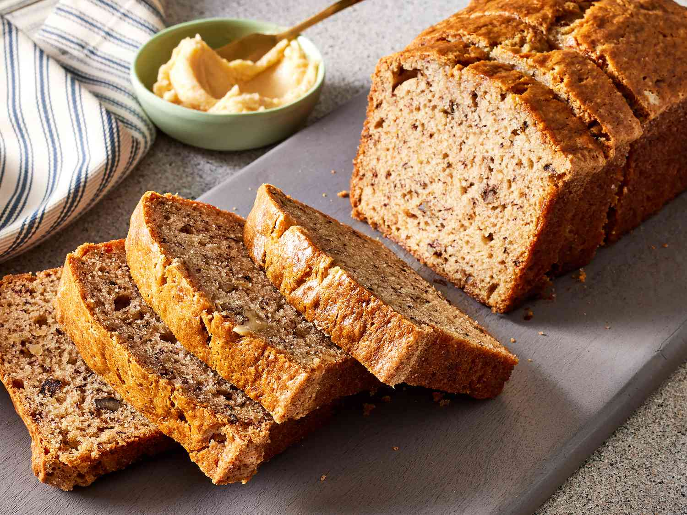

Recipe Book
Banana Bread
fresh baked bread with bananas and spices in it
ingredients
- 1/4 cup all-purpose flour
- 1/4 teaspoon baking soda
- 1/4 teaspoon ground cinnamon
- pinch salt
- 1 medium banana, mashed
- 2 tablespoons sugar
- 1 tablespoon salted butter, melted
- 1 large egg yolk
- 1/2 teaspoon vanilla extract
steps
- Set oven to 350 f and grease a pan
- In a small bowl, combine flour, baking soda, cinnamon, and salt together
- Mash banana in a separate bowl
- Add the sugar and whip the banana and sugar together
- Add the melted butter, the egg yolk, and the vanilla; mix well
- Add the dry ingredients and mix until combined
- Pour into the ramekin and bake for 25-30 minutes until golden brown
- Remove from oven, wait for it to cool to slice and enjoy
